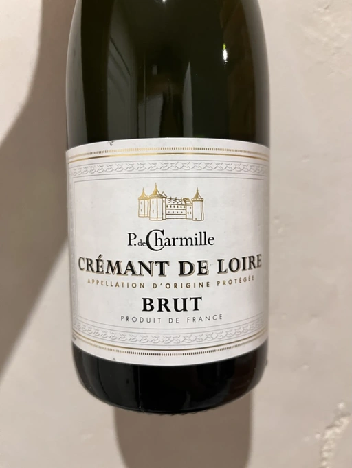

- Type
- White Sparkling, Brut
- Producer
- Philippe de Charmille
- Vintage
- NV
- Location
- France, Crémant de Loire AOC
- Grapes
- Chenin Blanc, Cabernet Franc, Chardonnay
- Alcohol
- 12
- Sugar
- NA
- Price
- 399 UAH, 475 UAH
- Cellar
- N/A
Ratings
2022-06-04 - 7.00
Up to expectations. Simple yet pleasant Crémant from Loire. Notes of crème brûlée, apple, soaked apple, quince and… I think that’s it. Matching flavours, good volume, but weak bubbles. It also lacks in acidity for my taste, so I’d call it liquid ice cream with bubbles. Good entry level into Brut territory.
2022-12-23 - 7.00
Simple yet pleasant. Crème brûlée, apple and quince. The aftertaste is rather short, but overall it has good volume. Friendly palate of liquid icecream with easy-to-understand flavours.